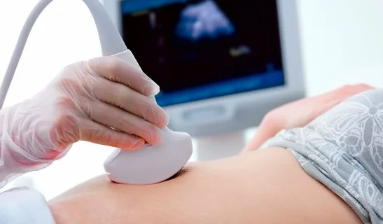

Ecografía renal
Utiliza ondas sonoras de alta frecuencia (ultrasonido) para obtener imágenes de los riñones y vías urinarias en tiempo real, aplicando gel y deslizando un transductor sobre la piel.
Permite observar: tamaño y forma de los riñones, quistes, tumores, dilatación de vías urinarias, litiasis y obstrucciones. Ventajas: no usa radiación, es indolora, rápida y segura.
Fuente: Quirónsalud ↗